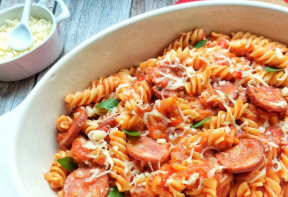

Repositorio: Trabalho Laboratorio De inicialização a programação

Descrição
Projeto Do Site Testes cuja principal funcionalidade irá ser informar o modo de preparo de inúmeras receitas conforme os ingredientes presentes na casa do usuário.
Data de Criação
14/04/2024
Linguagem
HTML
link
https://github.com/ICEI-PUC-Minas-PPLCC-TI/ti-1-ppl-cc-m-20241-1-receitas
Tópicos